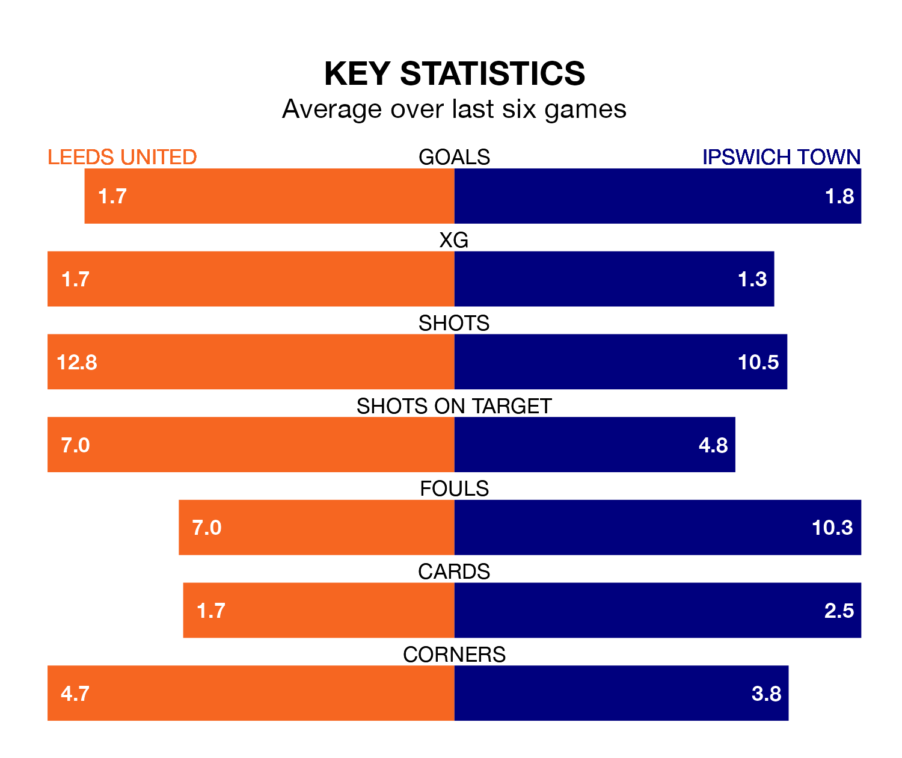

Two of the Championship's top sides face each other at Elland Road in Saturday lunchtime's kick-off, when third-placed Leeds United host second-placed Ipswich Town.
Leeds have picked up 12 wins and six draws from 22 games so far this season, and sit 10 points below the visitors going into the 12.30pm match.
The Blues, meanwhile, have won 16 and drawn four, picking up 52 points.
With 47 goals in 22 games so far this season, Ipswich are the league's highest scorers with 2.1 goals per game. And they are conceding fewer than average, letting in 28 goals at a rate of 1.3 per game.
Leeds are also above average scorers, with 1.7 goals per game, compared to a league average of 1.4. They have conceded 1.0 goal per game.
With Illan Meslier between the sticks, United can rely on one of the league's safest pair of hands. He has kept seven clean sheets in his 22 appearances this season, and only one other 'keeper – West Bromwich Albion's Alex Palmer – has been able to prevent the opposition scoring on more occasions in the Championship.
In Town's net, Václav Hladký also has seven clean sheets in 22 games. He has conceded a goal every 83 minutes, 20% more often than the 99 minutes between goals for Meslier.
In the last 10 years, Leeds and Ipswich have played each other on 12 occasions. They won five each, and they drew twice.
On average, Leeds scored 1.5 goals and the Blues 1.6 in those matches.
Their last meeting was on August 26, when Leeds won 4-3 away.
The home side are in reasonable form in the Championship, with three wins and two draws from their last six games.
With four wins and a draw over that period, the Blues' form is slightly better – they have taken 13 points from 18, compared to Leeds' 11.
Leeds' last match was on Saturday, a 1-1 draw against Coventry City, with Crysencio Summerville getting the goal for Leeds.
Ipswich drew 2-2 with Norwich City last time out, also on December 16, with Nathan Broadhead and Wes Burns on the scoresheet.
